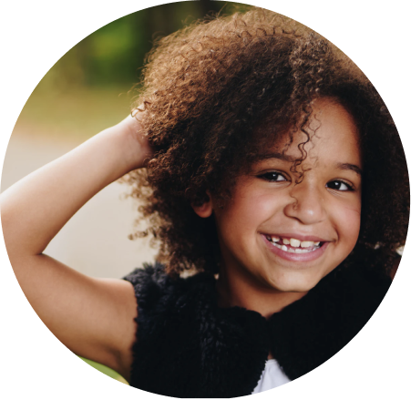
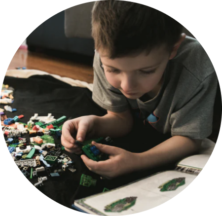
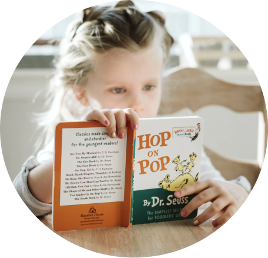
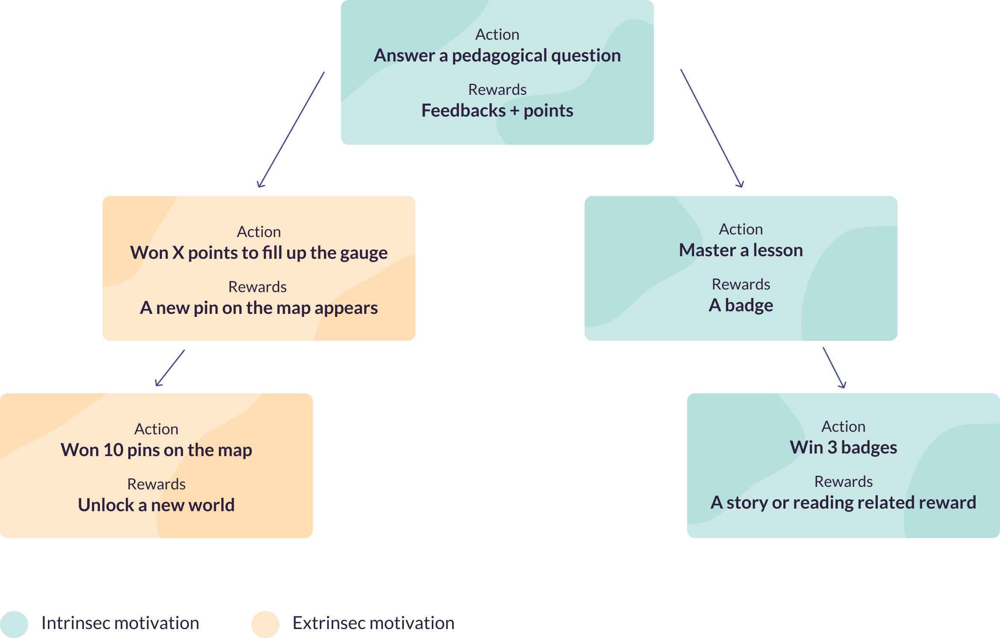
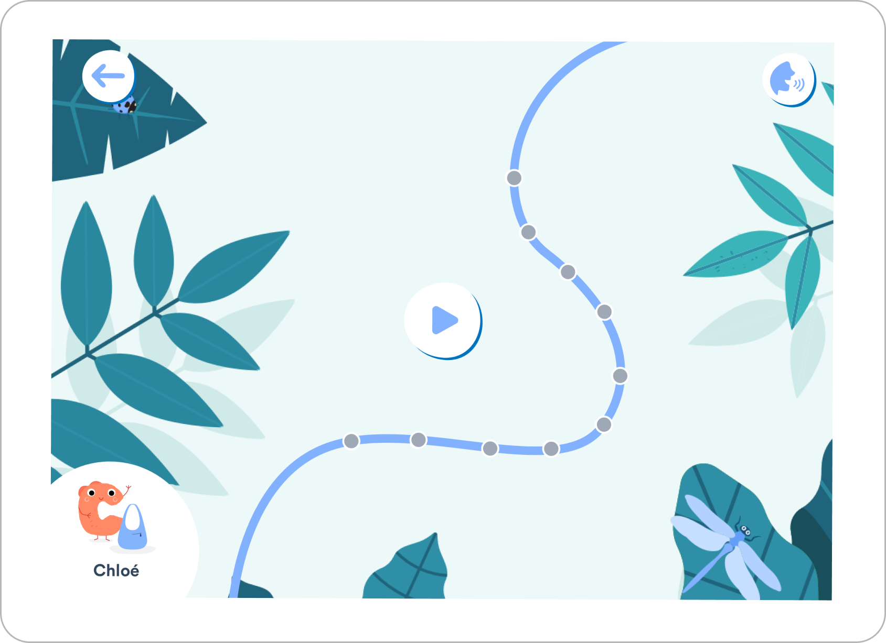
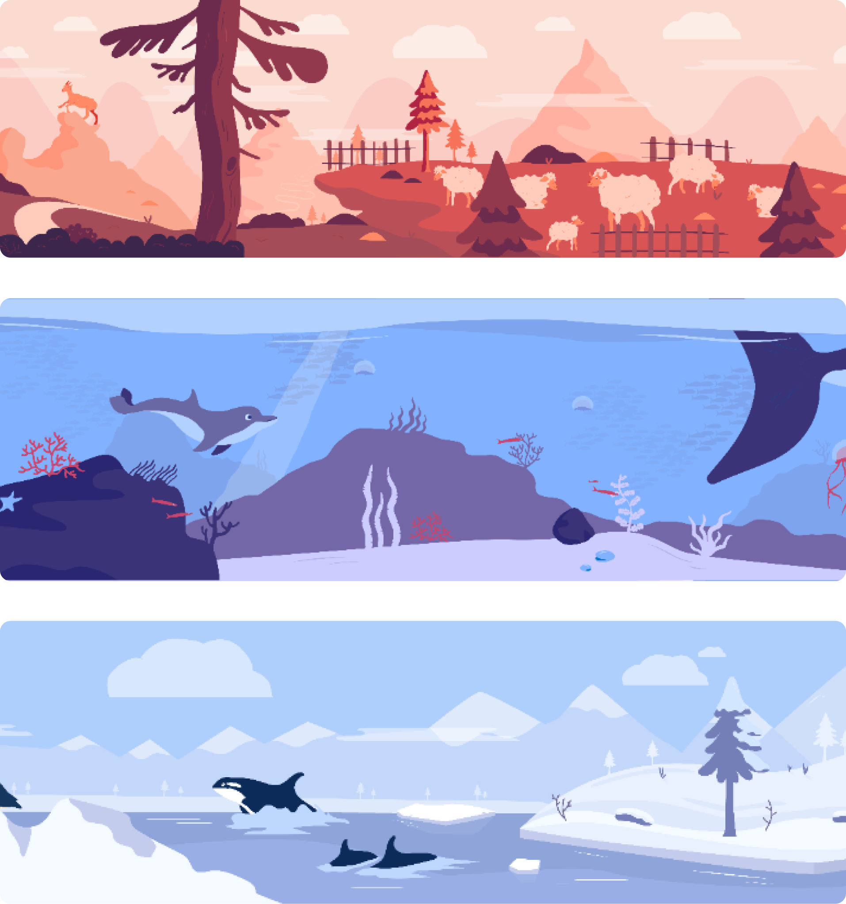
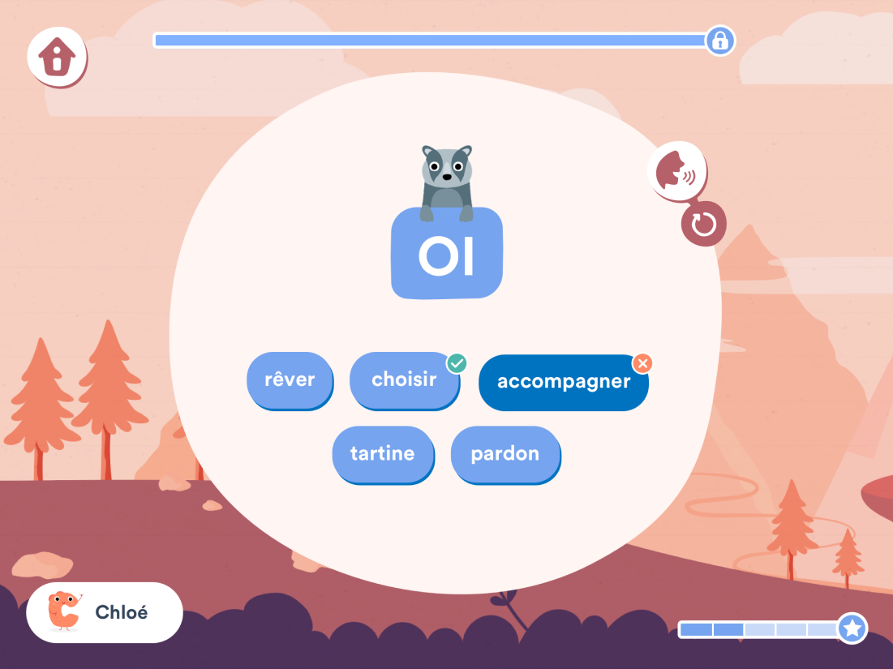
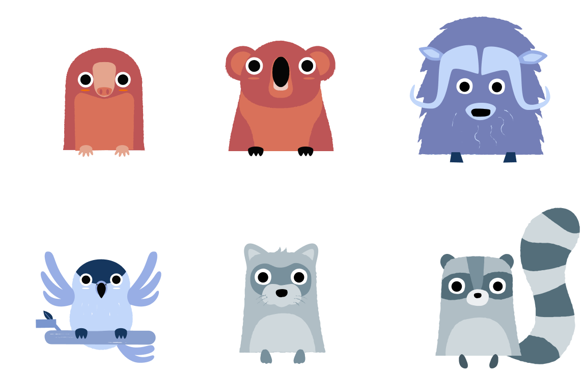
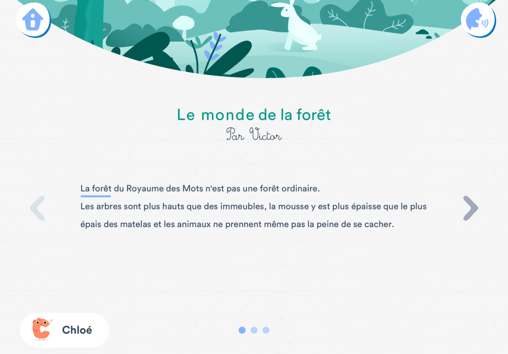

Overview
Lalilo helps children in kindergarten to second grade learn to read. Gamification was one of our biggest subjects: we wanted students to stay engaged on the platform and at school all year long, and to feel that every little step in their journey was a victory. I designed the system, its interfaces and its illustrations.
Details
- Surface
- Web platform, student app
- Role
- UX & UI Designer, Illustrator, Product management
- Team
- Designer · Developers · Product Owner · Educational content team · Data scientists
- Scope
- Personas · Reward system · UI design · Illustration · Classroom observation
Problem
Keeping 6-year-olds engaged all year
Children don't come to reading with the same motivation. Some love books, some struggle at school, some love games. And whatever hooks them in September has to still work in June.
Solution
Two kinds of rewards, one journey
A reward loop built with the educational team and data scientists, mixing extrinsic rewards (pins on a map, new worlds) with intrinsic ones tied to reading skills (badges, stories), so every child finds a reason to keep going.
Result
More daily practice
Students practised more often: daily practice rose by 25%, with a journey that kept renewing itself through the school year.
Impact
+25%
of daily practice among students
2
kinds of motivation in one loop, so each child can move forward on either
3 years
of iterations, from 2017 to 2020, observing students in class
Context
Lalilo is used at school, every week, for a whole year.
Our users are around 6 years old. Many are just discovering computers, and they use the platform in class with their teacher. Unlike a game they pick up for a weekend, the challenge is to keep them engaged from the first week of school to the last.
Goals
Provide an engaging product for students from kindergarten to second grade.
- Make progress visible, so students feel they are moving forward.
- Motivate children who don't share the same relationship with reading or games.
- Keep the system cheap to produce for developers, designers and writers.
Personas
Students come from different backgrounds, so they don't engage with learning to read in the same way.
We focused the first version on three profiles. Many other differences could be taken into account later, like social background, age or disabilities.

Jessica
Reading
Enjoys reading and is starting to read simple sentences.
Games & tech
Familiar with mobile games, more of an explorer.

Alex
Reading
Has some difficulties with learning at school.
Games & tech
Familiar with video games and computers.

Chelsea
Reading
Loves to read and already reads little books on her own.
Games & tech
Isn't yet autonomous with computers.
Key steps
Step 01
A loop with two kinds of motivation.
With the educational editors and data scientists, we built a system that rewards both sides. Answering questions fills a gauge that adds pins to the map and unlocks new worlds. Mastering lessons earns badges, and badges unlock stories. Every child can move forward on one side and still stay motivated.

Step 02
The map as the heart of the journey.
The map is the first thing students see when they arrive on Lalilo. Each step on the path is an exercise, so they can see how far they've come and what's next.

Step 03
Worlds that change through the year.
Students travel through different worlds over the school year. Every interface adapts to the world they're in, so the platform keeps feeling new and their progress stays visible.

Design 1/3
Exercises inside the world
Exercises take on the colours and landscape of the current world, with a progress bar towards the next reward.

Design 2/3
A new animal friend
Students meet a new animal at each exercise, a new friend every time they learn something new. I drew the whole cast.

Design 3/3
Stories and badges
Intrinsic rewards are tied directly to reading skills. Badges show what a student has mastered, and they unlock stories to read, so the reward is reading itself.

What I learned
There's no single way to engage a child.
Students are a very diverse population, and each one needs something different to stay engaged.
Design for the team, too.
Beyond users' needs, I learned to design a system that stays cheap to produce for developers, designers and writers.
Observe rather than ask.
Children talk a lot among themselves. Watching them regularly in class and catching feedback on the go gave more honest answers than asking them about engagement.
What I'd do next
Go further on the personas we set aside for the first version, like age, social background or disabilities, and adapt rewards to each child's profile. And keep working on the real challenge at Lalilo: holding engagement across the whole school year, not just the first weeks.